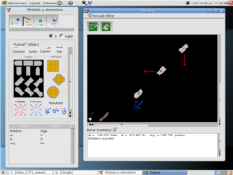
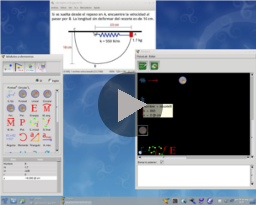

FísicaLabThe free software to the physics (free as in freedom) |
October 16, 2012: Deb packages for Ubuntu and Debian
| News (RSS) | Downloads | Screenshots | Helping | Bugs on FísicaLab | Donations |
FisicaLab (can be pronounced as
PhysicsLab) is an educational application to solve physics
problems. Its main objective is let the user to focus in physics
concepts, leaving aside the mathematical details (FisicaLab take care
of them). This allows the user to become familiar with the physical
concepts without running the risk of getting lost in mathematical
details. And so, when the user gain confidence in applying physical
concepts, will be better prepared to solve the problems by hand (with
pen and paper). The latest release of FisicaLab have the following
modules:
The static and dynamic problems are entered constructing the free body diagrams of the objects. Although FísicaLab is easy and intuitive, we recommend you read the help files first before set any problem. You can access these files in the option menu Info -> Help (or FisicaLab -> Info -> Help). |

 |
FísicaLab is free software (free as in freedom), published under the GPLv3. Or (at your option) any later version.
Germán A. Arias <german@xelalug.org>
You can get help, write comments or report bugs on the general discussion list of FísicaLab. To suscribe click here, or you can see if your question have answer now on the archives here.
To report a bug, please provide information as much as possible: information machine, operative system, version of the operative system, GSL version, GNUstep version, and a description of the problem.